Buenos Aires, desde 2022
Somos dos personas que se eligieron con todo: lo lindo, lo intenso, lo imperfecto. El cocina comfort food y ella cocina sano. El pide validacion constante y ella tira frases que terminan en screenshot. Los dos tomamos terapia, los dos amamos a nuestras perras como si fueran hijas, y los dos creemos que la honestidad es mas importante que la comodidad.
Vivimos entre Palermo y Villa Crespo, entre mates de Union y Canarias, entre TikToks a las 2am y "te amo, yo mas" antes de dormir.
"Miremonos a los ojos y prometamos verdad, para todo"— Andi, mayo 2025
Nacido en Buenos Aires, alma de Bell Ville. CEO de dia, cocinero de noche. Hace el mejor pure del mundo (segun el). Le pregunta a Andi si esta lindo 47 veces por dia. Se inspira en Jacob Elordi pero come hamburguesas con sopa Quick. Impulsivo, cariñoso, intenso. Si no le responden rapido, entra en crisis.
"Toy lindo?"La mas estructurada de los dos. Trabaja hasta la 1:30am y a las 7 ya esta de pie. Fashionista natural que viste a Pedro sin que el se de cuenta. Inteligencia emocional altisima. Escribe reflexiones de pareja que merecen ser enmarcadas. Le frustra no ser buena en ingles porque le gusta ser buena en todo. Sensible, fuerte, genuina.
"Re team, nos amo"Las verdaderas protagonistas de esta historia
La perra de Pedro. Gordita, traviesa, come chuletas y llora con una mantita. No le gusta la lluvia. Es una campesina con aspiraciones de princesa. Tiene su propia cancion que dice "gordito" y "pide chuletas".
La perra de Andi. Negrita, sensible, no suele mover la cola. Salvo cuando le cantan SU cancion — ahi si, mueve todo. Es mas nena, mas delicada. Andi la ama con una intensidad que solo entiende otro dueno de mascota.
El hace pure, arroz y hamburguesas. Ella hace pollo a la plancha con limon y ensaladas. El vive de sopa Quick. Ella le insiste con la fruta y la verdura. Se complementan: comfort food + comida sana = equilibrio.
Union vs Canarias. El debate que nunca se resuelve. Pedro toma Union ("la del pueblo"). Andi dice que Canarias es "la de los chetos". A las 7am, lo unico que importa es que este caliente.
Andi es la directora de arte de la pareja. Pedro quiere vestirse como Jacob Elordi. Ella lo logra sin que el se entere. Las amigas de Andi copian sus looks. Es fashionista por naturaleza.
Bogota, Europa, y todo lo que venga. Les gusta descubrir restaurantes, caminar ciudades, y mandarse fotos del otro sin que se den cuenta. El souvenir siempre es ropa.
Palermo, Villa Crespo, San Telmo. Cine en Cinepolis, cenas en Don Julio, desayunos en Cafe Crespin. Puteamos a Buenos Aires pero no nos vamos nunca. Es nuestra ciudad.
Series, documentales, la peli de Robbie Williams que los hizo llorar. TikToks hasta las 2am. "Te amo" / "Yo mas" / silencio / dormir. Todos los dias.
Fragmentos de nosotros
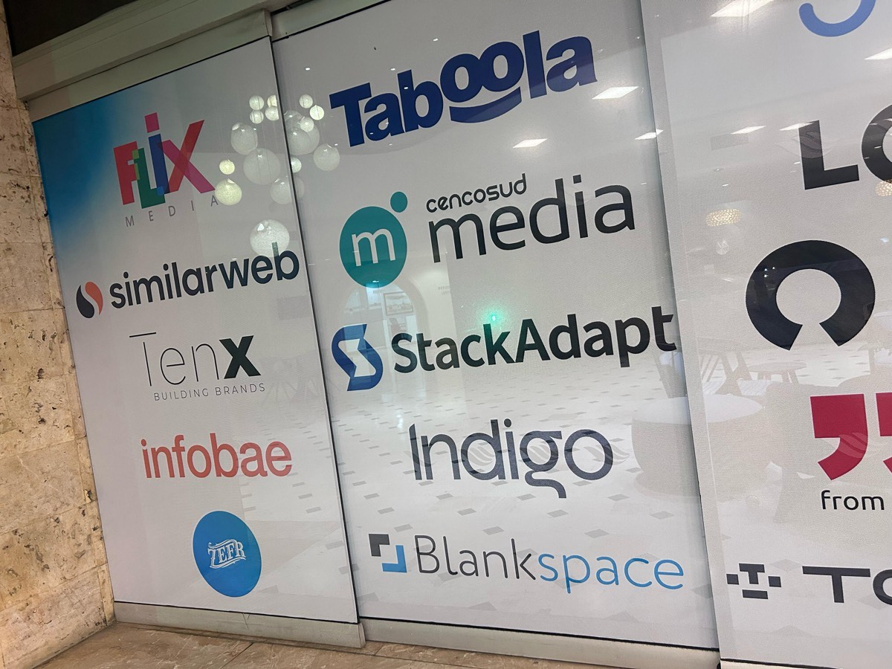
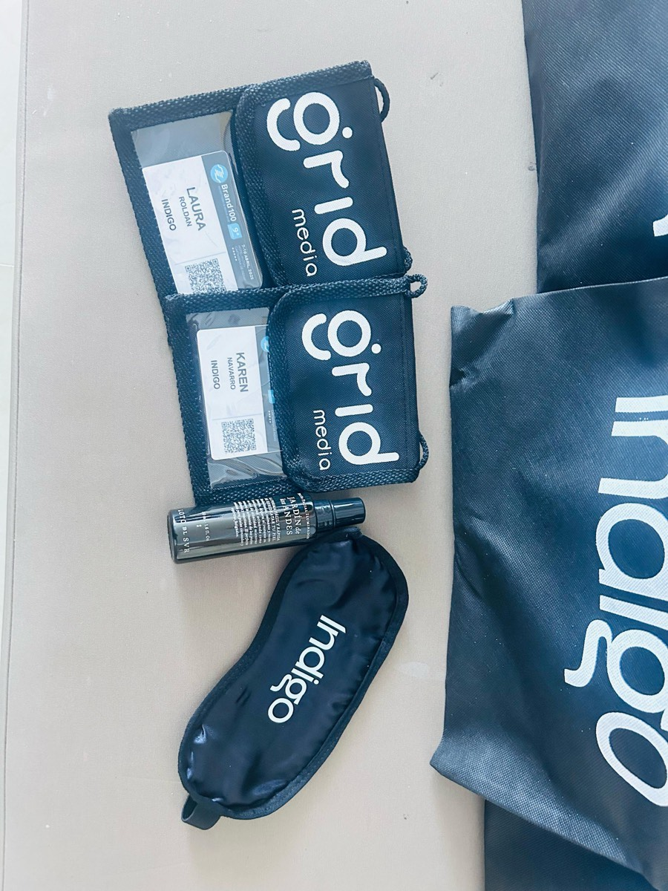
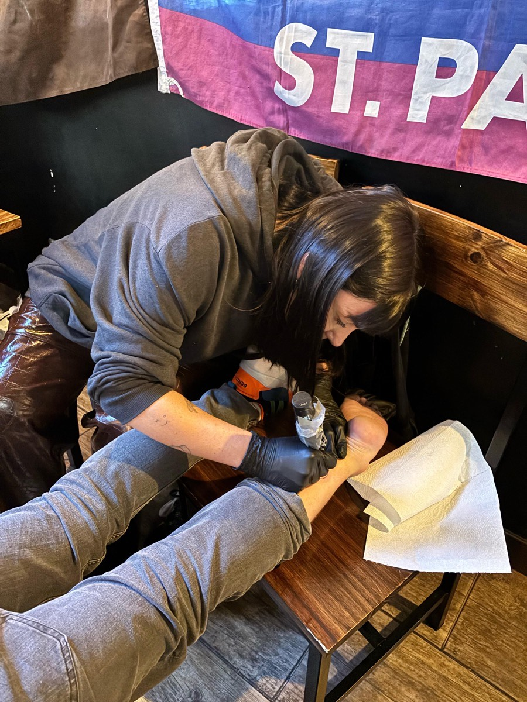
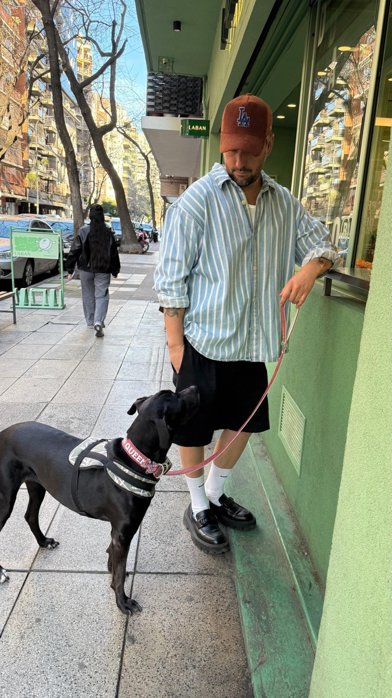
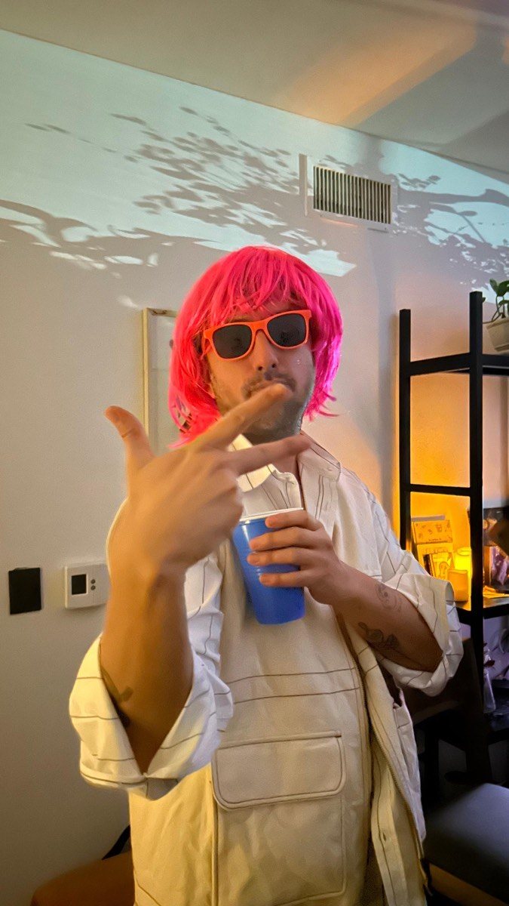
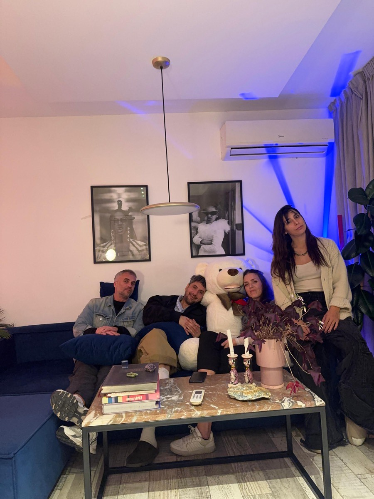
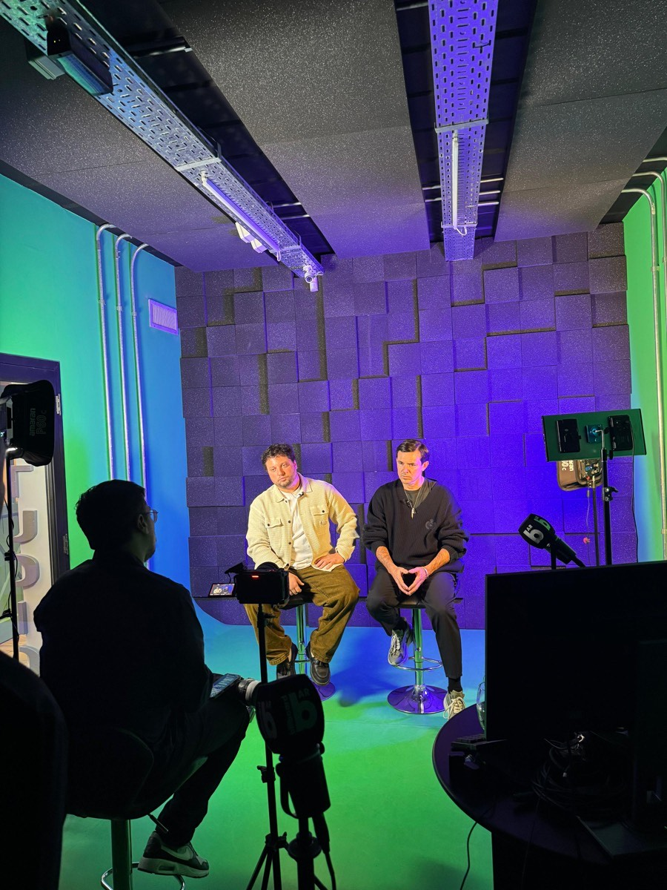
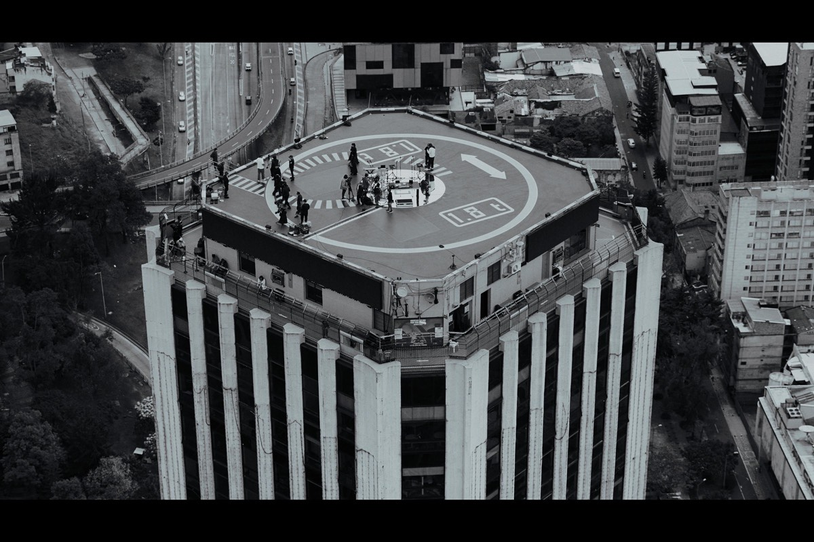
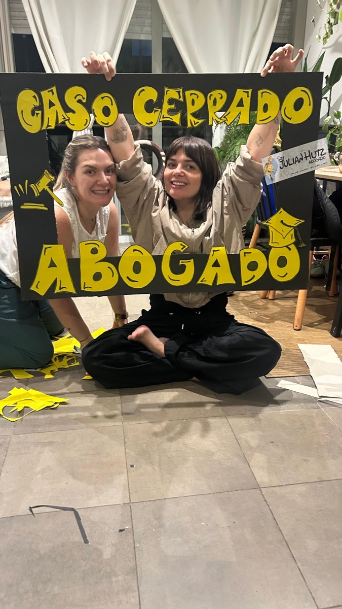
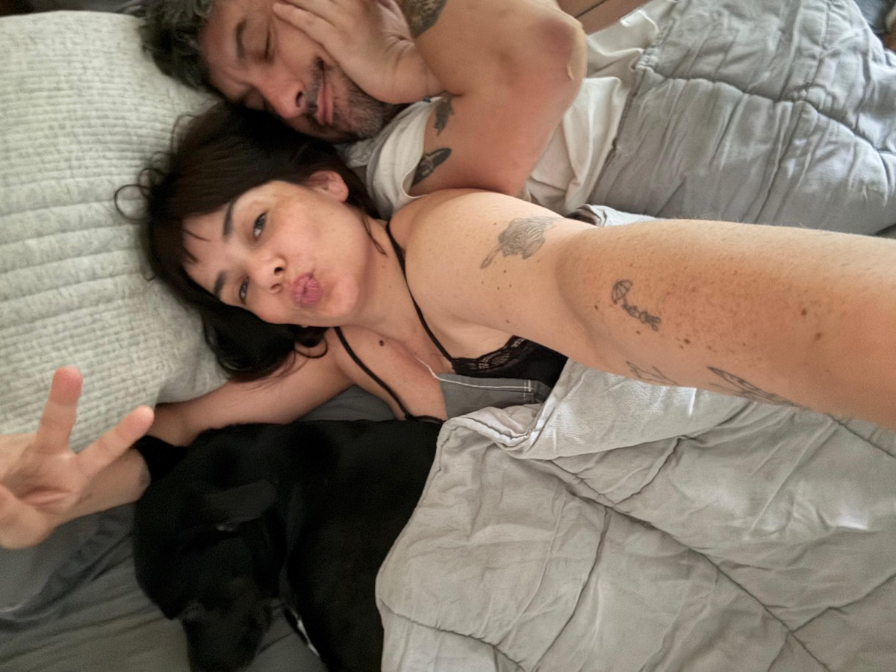
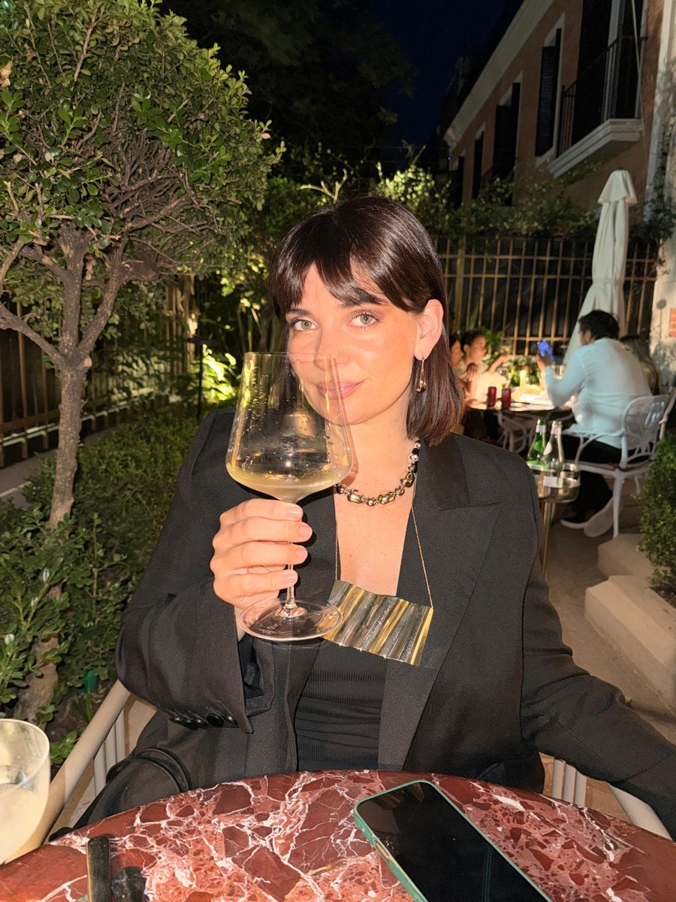
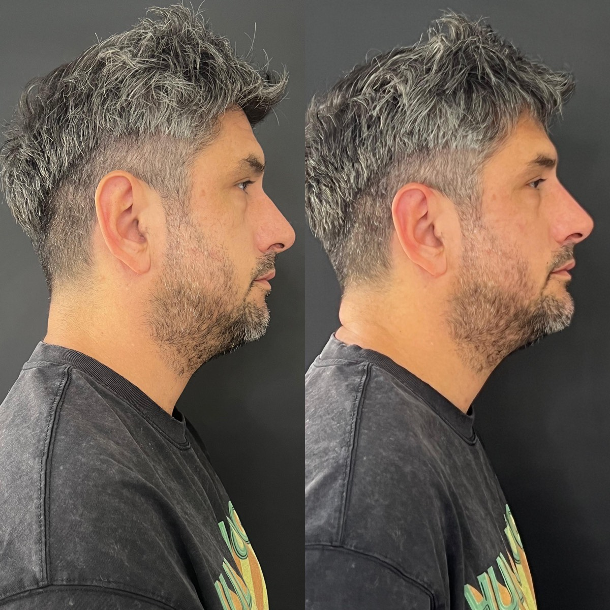
Buenos Aires a traves de nosotros
La cena de ocasion especial. Cuando hay algo que celebrar, aca terminamos.
Desayunos con huevito. El lugar donde arrancamos los fines de semana bien.
Cuando no queremos cocinar y queremos comer bien sin pensarlo.
Cerveza antes, pochoclos durante, debate de la peli despues.
Si, el super es un plan de pareja. Pasillo por pasillo, discutiendo marcas de yerba.
Ella va con disciplina, el va con fiaca. Pero van. Y eso cuenta.
Se eligen. No saben todo lo que viene, pero saben que quieren intentarlo.
Andi manda "2 anios" en un mensaje que dice todo sin decir nada. Ya son ellos.
"Miremonos a los ojos y prometamos verdad, para todo". La conversacion que cambio la forma de hablarse.
Le encuentran algo a Martina. Los dos se asustan, se abrazan mas fuerte, prometen que frente a las bebes todo sera amor. Marti sale adelante.
Una manana de su cumpleanos que quedo grabada. "Me quedo con esa manana", dice Andi despues.
Zonaprop a las 2am. Tres ambientes con patio. "Para que las bebes corran". El proyecto mas lindo: armar un hogar juntos.
Terapia, trabajo, crecimiento. No es perfecto. Es real. Y eso es mejor.